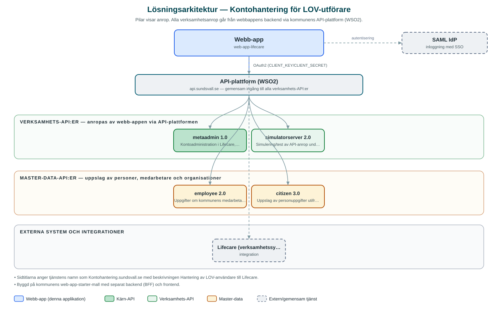

Kontohantering för LOV-utförare
Internt verktyg där handläggare hanterar konton för privata LOV-utförares personal i verksamhetssystemet Lifecare.
Om applikationen
Tjänsten (Kontohantering.sundsvall.se) används för att skapa, ändra och avsluta användarkonton för personal hos privata utförare inom valfrihetssystemet LOV, så att de kan arbeta i vård- och omsorgssystemet Lifecare.
Handläggaren slår upp personen via personnummer, kopplar kontot till rätt utförarorganisation och anger giltighetstid och kontaktuppgifter. Kontona är tidsbegränsade och kan förlängas eller tas bort. Det går även att återställa en utförares lösenord, varvid ett nytt skickas ut via SMS.
Inloggning sker med kommunens centrala inloggning och tjänsten kontrollerar att handläggaren har rätt behörighet innan konton kan hanteras.
Det här stödjer applikationen
- Skapa utförarkonton – Registrera nya konton för LOV-utförares personal med koppling till rätt organisation.
- Personuppslag – Hämta personuppgifter via personnummer för säker identifiering.
- Tidsbegränsade konton – Sätt och förläng giltighetstid för konton samt avsluta konton som inte längre behövs.
- Lösenordsåterställning via SMS – Återställ en utförares lösenord och skicka det nya via SMS.
Teknisk dokumentation
Nedan beskrivs hur applikationen är uppbyggd, vilka API:er den använder och vad som krävs för att driftsätta den. Informationen är härledd ur källkoden och dess konfiguration på GitHub.
Arkitektur

Applikationen består av en webbaserad frontend (Next.js 14, React 18, sk-web-gui, Tailwind CSS) och en backend (Node.js med Express och routing-controllers (TypeScript)) som utvecklas i samma kodbas. Verksamhetsanrop går via kommunens gemensamma API-plattform (WSO2) – frontend pratar aldrig direkt med underliggande system. Inloggning: SAML (SSO). Övriga integrationer som förekommer i koden: Lifecare (verksamhetssystem för vård och omsorg), WSO2 API-gateway, SAML IdP.
Teknikstack
- Frontend: Next.js 14, React 18, sk-web-gui, Tailwind CSS
- Backend: Node.js med Express och routing-controllers (TypeScript)
- Test: Jest och Cypress
API-beroenden
Applikationen konsumerar följande API:er via kommunens API-plattform. Versionerna är hämtade ur källkodens API-konfiguration.
| API | Version | Användning |
|---|---|---|
| metaadmin | 1.0 | Kontoadministration i Lifecare, inklusive lösenordsåterställning med SMS-utskick. |
| simulatorserver | 2.0 | Simulering/test av API-anrop under utveckling. |
| employee | 2.0 | Uppgifter om kommunens medarbetare och behörighetskontroll. |
| citizen | 3.0 | Uppslag av personuppgifter utifrån personnummer. |
Konfiguration och driftsättning
- .env-filer för frontend och backend enligt exempel (.env-example, .env.example.local)
- CLIENT_KEY och CLIENT_SECRET från WSO2-portalen för API-åtkomst
- SAML-konfiguration med certifikat och nycklar (SAML_ENTRY_SSO, SAML_IDP_PUBLIC_CERT m.fl.)
Noterbart ur källkoden
- Sidtitlarna anger tjänstens namn som Kontohantering.sundsvall.se med beskrivningen Hantering av LOV-användare till Lifecare.
- Byggd på kommunens web-app-starter-mall med separat backend (BFF) och frontend.
Källkod
Källkoden är öppen och finns hos Sundsvalls kommun på GitHub. I källkodsförrådet finns även instruktioner för att klona, konfigurera och starta applikationen i egen miljö.